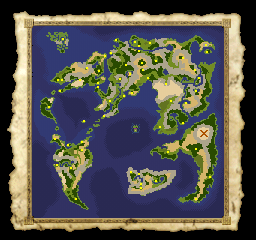
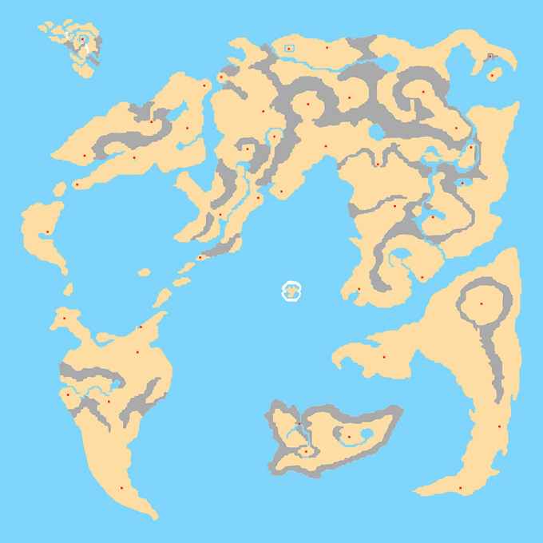

세계 지도

▲ PS판 세계 지도 화면

브랑카
엔돌
본몰
사막의 여관
산속의 마을
배반의 동굴
아네일
코난베리
대등대
민트스
소렛타
파데키아의 동굴
킹레오
하바리아
앗템트
몬바바라
코미즈
코미즈 서쪽 동굴
산트하임
템페
사막의 바자
프레놀
프레놀
남쪽 동굴
지저귐의 탑
스탄시아라
바트란드
이므르
가덴브루그
가덴브루그 남동쪽 동굴
로자리 힐
리버 사이드
마신상
데스 팰리스
메달왕의 성
갓 사이드
세계수
왕가의 무덤
해명의 동굴
폭포가 흐르는 동굴
호수의 탑
레이크나바
본몰 북쪽 마을
여신상의 동굴
엔돌행 동굴
해변의 마을
▲ 지명 첨부, 세계 지도